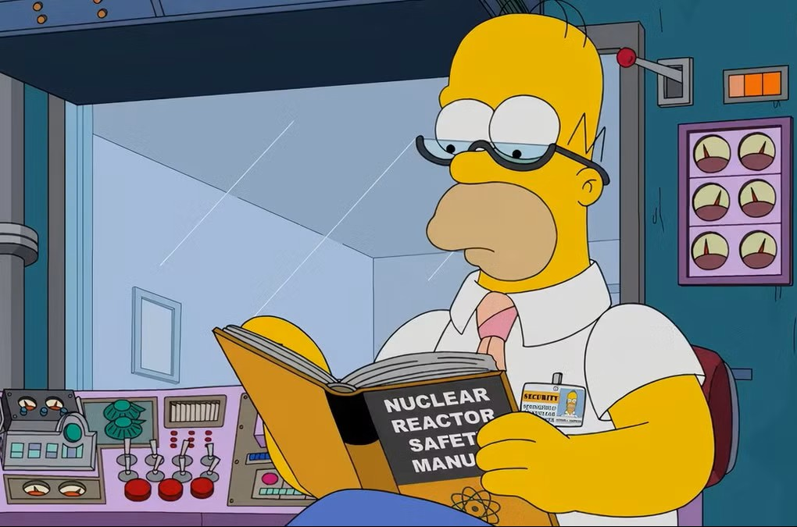

Basics behind nuclear reactors
The basics behind nuclear fission found in commerical nuclear power plants.
Learn more.png)
For us to address misconceptions and misuse of physics surrounding nuclear energy it would useful to understand safeguards behind nuclear reactors to show how safe nuclear energy is.

One such safeguard is in the fuel itself. Only between 3.5% to 5% of the nuclear fuel is fissionable. This means, for example, there would only be a small percentage of Uranium-235 (radioactive) to Uranium-238 (non-radioactive). With such a low density of fissionable materials, the neutrons are less likely to hit another Uranium-235 nucleus for a while, thus preventing a sudden release of energy.
Possibly of the biggest safeguards in a reactor is the control rods. Control rods are rods made from neutron-absorbing materials, such as boron, which are used to absorb excess neutrons from the core, thus reducing the total number of neutrons in the core leading to a slowing down of the reaction. Control rods can be inserted into the core by varying amounts, as required by the current situation. They are usually placed in such a manner that if the mechanical system used to move the rods fail, then they will automatically fall into the reactor, thus preventing the core from becoming unstable. Below is a diagram of how the control rods work.
The majority nuclear reactor cores are built to be have negative reactivity feedback, making the reactors self-regulating. This means that the nuclear reactor core is built such that the power levels remain stable within the core, preventing sudden bursts of energy. This effect is created through the use of moderation.
In a nuclear reactor core, a moderator is used to slow down the neutrons within the core, not to slow down the reactor, but to speed up the reaction. This happens because when the neutrons are slowed down by the moderator, they spend more time close to the U-235 nuclei, making it more likely to be absorbed. Examples of some moderators are graphite, water and heavy water (D2O).
Degree of Thermalisation
50% thermalised
Power Output
50% steady power
Under-modulated: Negative modulation coefficient.
The majority of reactors are ‘under-moderated’. This means that if more moderation material is added to the reactor then the neutrons will become closer to the optimal speed for fission reaction, this is called degree of thermalisation of neutrons. So for under-moderated reactors, the degree of thermalisation of neutrons is below 100%. This under-moderation helps to keep a stable equilibrium. For example, if there is a sudden power surge in the core, then the moderator heats up, decreasing the moderator density, reducing the degree of thermalisation. Therefore, neutrons are not slowed down, reducing the probability of nuclear fission, thus decreasing power output. This is a passive action and is why the reactor is determined to be self-regulating.
Continue to explore the rest of the nuclear energy topics below.
The basics behind nuclear fission found in commerical nuclear power plants.
Learn moreAddressing a few common misconceptions of nuclear power industry.
Learn moreA look into some of the safeguards put in place which the general public may not be aware of.
Learn more